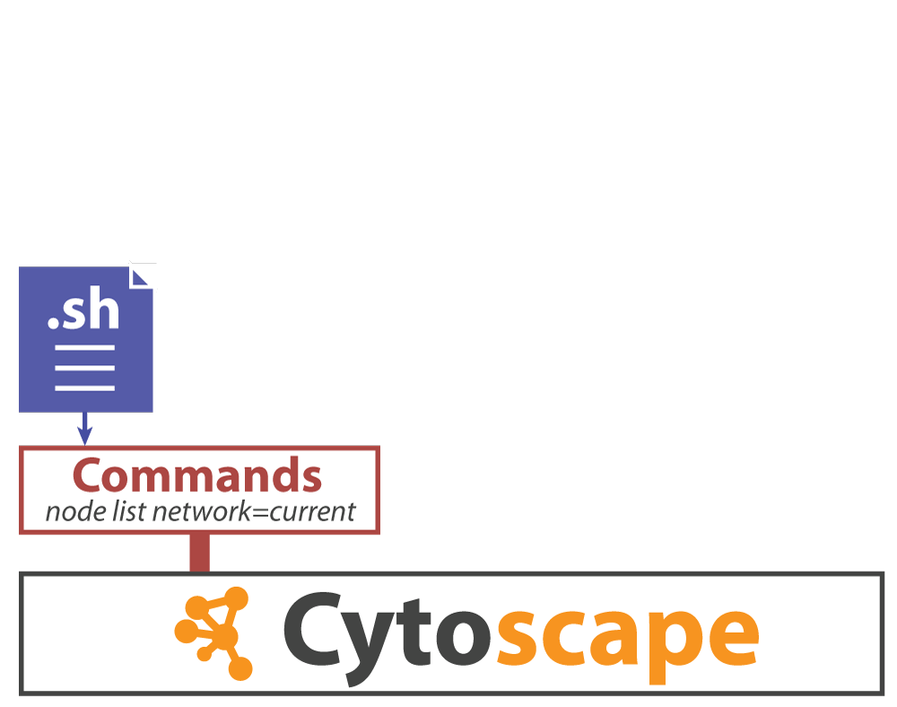
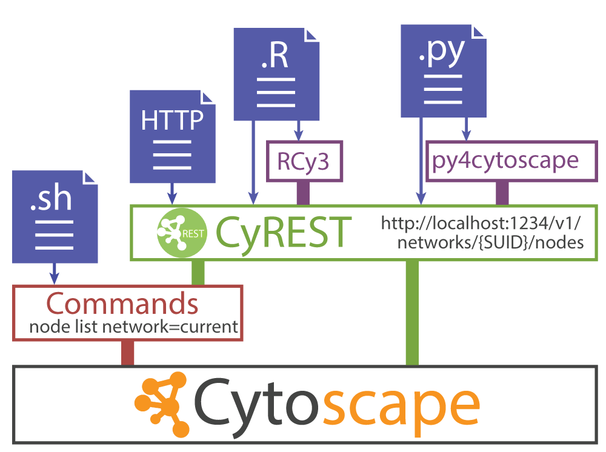

Automation Use Case
Biological Question
- What molecular changes occur in breast and ovarian tumors?
- Do they interact with each other and with other cancer genes?
- Are there key subnetworks affected in these cancers?
Dataset
- Gene expression and mutation data from TCGA
Approach
- Starting in R, connect to Cytoscape using CyREST
- Construct disease networks in Cytoscape from R
- Integrate TCGA data in R with networks
- Perform data overlays and network analysis
- Export images and sessions for sharing and publication
TCGA (2011) Nature. & TCGA (2012) Nature.
Brief History of Cytoscape Automation


When to Automate
Why run a script when I could just use Cytoscape directly?
- For things you want to do multiple times, e.g., loops
- For things you want to repeat in the future
- For things you want to share with colleagues or publish
- For things you are already working on in R or Python, etc
Tutorial Materials
Next, open RStudio and start a new project (File>New Project…). Choose Existing Directory and navigate to cytoscape-automation/for-scripters/R.
Then, open advanced-cancer-networks-and-data.Rmd and work through the tutorial steps.